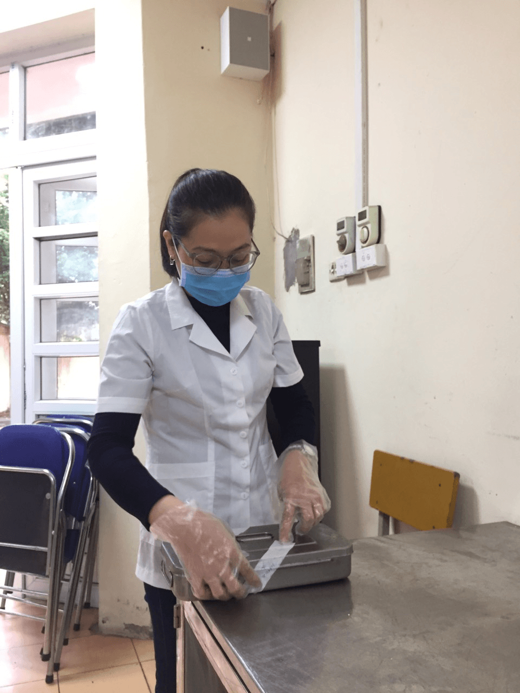

CÁC BIỆN PHÁP NÂNG CAO CÔNG TÁC AN TOÀN THỰC PHẨM TẠI TRƯỜNG TIỂU HỌC YÊN SỞ
An toàn thực phẩm có tầm quan trọng đặc biệt vì đó không chỉ là vấn đề ảnh hưởng trực tiếp đến sức khỏe con người mà còn tác động tới sự phát triển kinh tế, văn hóa - xã hội. Ngộ độc thực phẩm và các bệnh dịch do thực phẩm gây ra không chỉ gây ảnh hưởng trực tiếp tới sức khoẻ và cuộc sống của con người, mà còn gây thiệt hại lớn về kinh tế, là gánh nặng lớn cho chi phí chăm sóc sức khoẻ. Đối với các trường học có bếp ăn bán trú, vấn đề vệ sinh an toàn thực phẩm giữ vị trí quan trọng đối với sức khoẻ học sinh nó góp phần nâng cao sức học tập, lao động của thế hệ trẻ trong xã hội ngày càng phát triển hiện nay.
Xuất phát từ nhận thức trên, trường Tiểu học Yên Sở luôn luôn coi trọng công tác vệ sinh an toàn thực phẩm, đưa công tác an toàn thực phẩm là nhiệm vụ quan trọng được đặt lên hàng đầu.
Là một trường có tỉ lệ học sinh ăn bán trú gần 70%. Mỗi ngày, học sinh được ăn bữa trưa tại trường, với thực đơn được thay đổi hàng ngày để đảm bảo sự phong phú và đủ chất dinh dưỡng theo yêu cầu. Nhận thức được tầm quan trọng của việc giữ gìn vệ sinh an toàn thực phẩm cho học sinh, nhà trường đã đầu tư vào hệ thống nhà bếp. Đội ngũ nhân viên nhà bếp cũng như giáo viên của trường thường xuyên được tập huấn kiến thức, kỹ năng để đảm bảo vệ sinh ATTP trong các bữa ăn. Nhà trường tăng cường hơn công tác vệ sinh cho trẻ, đặc biệt là đảm bảo vệ sinh ATTP. Không chỉ thực phẩm đảm bảo an toàn, việc chế biến thức ăn, quá trình bảo quản thực phẩm đều phải tuân thủ theo quy trình bếp 1 chiều từ khâu sơ chế, đến khâu chia thức ăn. Nhà trường thường xuyên tổ chức tổng vệ sinh từ khu vực bếp đến phòng học; theo dõi sức khỏe của học sinh, đồng thời trực tiếp tuyên truyền, trao đổi với phụ huynh để cùng giữ vệ sinh, bảo vệ sức khỏe cho học sinh.
Để đảm bảo nguồn gốc thực phẩm rõ ràng, nhà trường đã ký kết hợp đồng ràng buộc trách nhiệm với các đơn vị cung cấp thực phẩm tươi sạch, có uy tín, đảm bảo chất lượng; có lưu mẫu thức ăn trong vòng 24 giờ; đội ngũ nhân viên nhà bếp đã được tập huấn kiến thức về vệ sinh ATTP và được khám sức khỏe định kỳ; Đưa kiến thức về dinh dưỡng, vệ sinh ATTP lồng ghép tuyên truyền cho các bậc cha mẹ ở các lớp như; treo tranh ảnh, áp-phích về vệ sinh ATTP tại các bảng tin, góc tuyên truyền của nhà trường,…để phụ huynh học sinh cùng có trách nhiệm quan tâm đến sức khỏe của học sinh.Đ/c cán bộ y tế nhà trường đang thực hiện công việc lưu nghiệm thức ăn
Nhà trường luôn thực hiện tốt 10 nguyên tắc vàng về an toàn thực phẩm.
Nguyên tắc 1: Chọn thực phẩm an toàn. Chọn thực phẩm tươi. Rau, quả ăn sống phải được ngâm và rửa kỹ bằng nước sạch. Quả nên gọt vỏ trước khi ăn. Thực phẩm đông lạnh để tan đá, rồi làm đông đá lại là kém an toàn.
Nguyên tắc 2: Nấu chín kỹ thức ăn. Nấu chín kỹ hoàn toàn thức ăn, là bảo đảm nhiệt độ trung tâm thực phẩm phải đạt tới trên 70°C.
Nguyên tắc 3: Ăn ngay sau khi nấu. Hãy ăn ngay sau khi vừa nấu xong, vì thức ăn càng để lâu thì càng nguy hiểm.
Nguyên tắc 4: Bảo quản cẩn thận các thức ăn đã nấu chính. Muốn giữ thức ăn quá 5 tiếng đồng hồ, cần phải giữ liên tục nóng trên 60°C hoặc lạnh dưới 10°C. Thức ăn cho trẻ nhỏ không nên dùng lại.
Nguyên tắc 5: Nấu lại thức ăn thật kỹ. Các thức ăn chín dùng lại sau 5 tiếng, nhất thiết phải được đun kỹ lại.
Nguyên tắc 6: Tránh ô nhiễm chéo giữa thức ăn chín và sống, với bề mặt bẩn. Thức ăn đã được nấu chính có thể bị nhiễm mầm bệnh do tiếp xúc trực tiếp với thức ăn sống hoặc gián tiếp với các bề mặt bẩn (như dùng chung dao, thớt để chế biến thực phẩm sống và chín).
Nguyên tắc 7: Rửa tay sạch trước khi chế biến thức ăn và sau mỗi lần gián đoạn để làm việc khác. Nếu bạn bị nhiễm trùng ở bàn tay, hãy băng kỹ và kín vết thương nhiễm trùng đó trước khi chế biến thức ăn.
Nguyên tắc 8: Giữ sạch các bề mặt chế biến thức ăn. Do thức ăn dễ bị nhiễm khuẩn, bất kỳ bề mặt nào dùng để chế biến thức ăn cũng phải được giữ sạch. Khăn lau bát đĩa cần phải được luộc nước sôi và thay thường xuyên trước khi sử dụng lại.
Nguyên tắc 9: Che đậy thực phẩm để tránh côn trùng và các động vật khác. Che đậy giữ thực phẩm trong hộp kín, chạn, tủ kính, lồng bàn... Đó là cách bảo vệ tốt nhất. Khăn đã dùng che đậy thức ăn chín phải được giặt sạch lại.
Nguyên tắc 10: Sử dụng nguồn nước sạch an toàn. Nước sạch là nước không màu, mùi, vị lạ và không chứa mầm bệnh. Hãy đun sôi trước khi làm đá uống. Đặc biệt cẩn thận với nguồn nước dùng nấu thức ăn cho trẻ nhỏ.
Với những biện pháp trên thì vấn đề an toàn thực phẩm trong hoạt động bán trú tại trường Tiểu học Yên Sở luôn được đảm bảo. Từ đó tạo sự an tâm, tin tưởng cho phụ huynh khi gửi gắm con vào nhà trường.